photo by Jeremy Allouche
Vancouver is one of those cities that's just as good to visitors as it is to permanent residents. The ocean-side location, Stanley Park green oasis with miles of trails, trees, and expansive views—enhance the cosmopolitan hub with pockets of nature, making spending time in this corner of British Columbia relaxing and invigorating all at once.
VANCOUVER TRAVEL GUIDE
"The little village on the edge of the rainforest,” as Vancouver was once famously described, is no longer that. Sure, the city’s incredible natural beauty remains undimmed—surrounded by snow-capped mountains on one side and the Pacific on the other, Canada’s third largest city is a rare place where “ you can swim in the ocean in the morning and go skiing in the afternoon,” according to cliché. (Nobody does this. Still.) Today, this sophisticated, cosmopolitan center is not just for the sporty, Gore-tex clad crowd. Perennially near or at the top of most “Best Places to Live” lists, travelers are drawn to this bustling seaport for its parks, museums, shopping and, perhaps most notably, a rich and varied culinary and cocktail scene that has become even more impressive after the city’s star turn hosting the 2010 Winter Olympics. Oh, and about that rain? In the summer, Vancouver is the driest major city in Canada. Just saying.
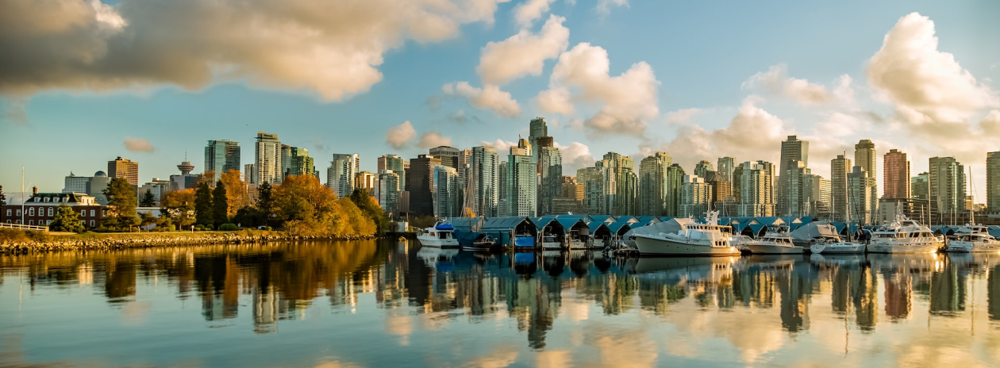Best Time to Go
There aren't any bad times to go to Vancouver, but because it's a northern city, there are reasons for every season. The summer months draw in the most tourists and boast the longest daylight hours, but the winter (which is surprisingly mild) is the least crowded time of year and has sprouting trees and flowers as early as February. Keep in mind that the rainiest months are from November to March, which leaves the month of September as the most idyllic time with changing leaves, cooling temps, and dry skies to get outside.
If you're into whale watching, April through November is prime time. For events and festivals, think about Chinese New Year, which lands between January and February, the Vancouver Marathon in May, Vancouver International Jazz Festival in June, or the Vancouver Pride Parade in July or August.
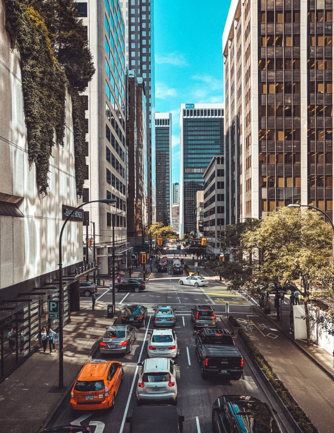
AROUND THE CITY
One of the best ways to get a feel for a city is to wander through its various neighbourhoods. If you only had a couple days in Vancouver we'd recommend dedicating a fair chunk of it to just walking around or hopping on a bikeshare and simply exploring, eating, and drinking in a somewhat haphazard way — I think it's sometimes best to discover a city on your own terms rather than treat it like a checklist to hurry through. But that said, visiting a new city can also be overwhelming, so here are some ideas to get you started.
Gastown
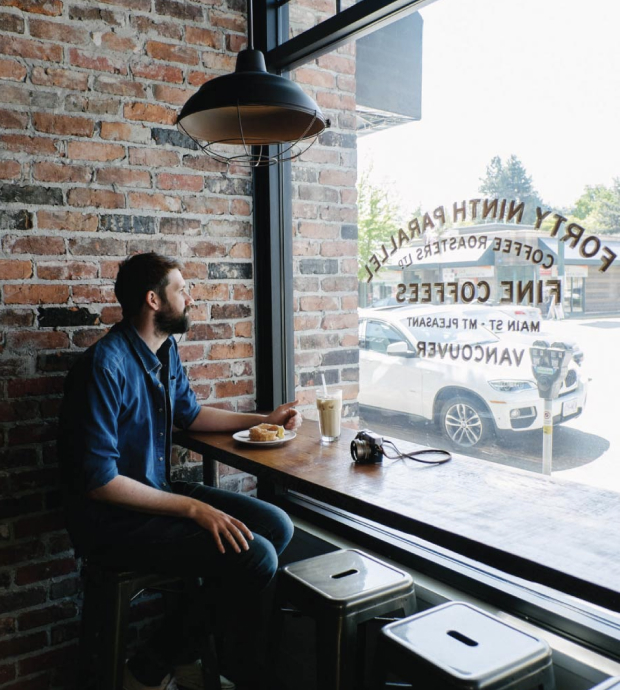Strachcona
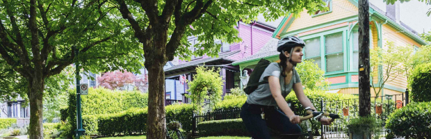Mt Pleasant
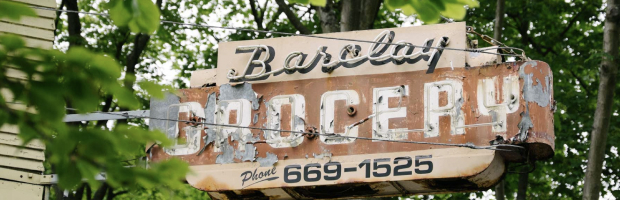The West End
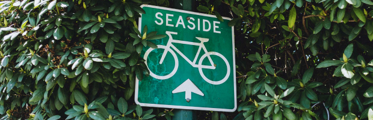Fraser
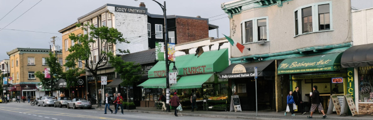Kitsiliano
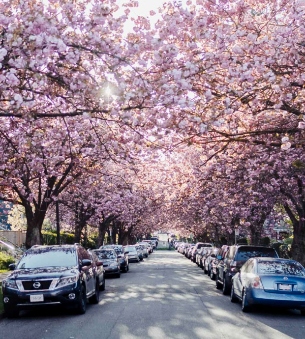More places to visit
Restaurants
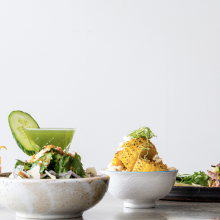
Torafuku
Downtown
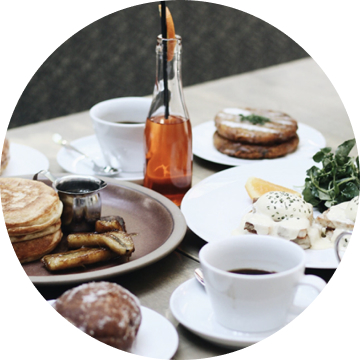
L’Abattoir
Downtown Eastside
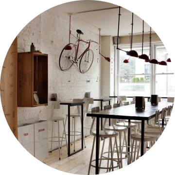
Pizzeria Farina
Downtown
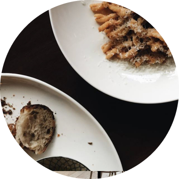
Kissa Tanto
Strathcona
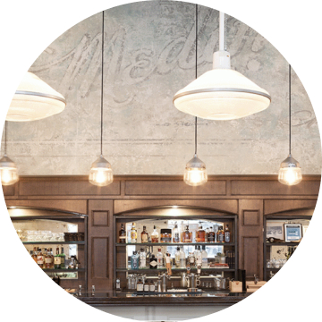
Medina Cafe
Downtown
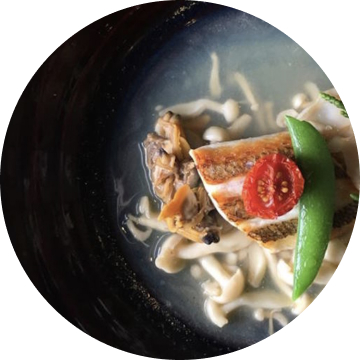
Tojo’s
Fairview